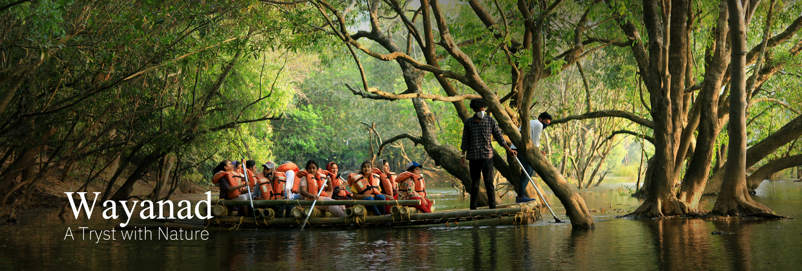
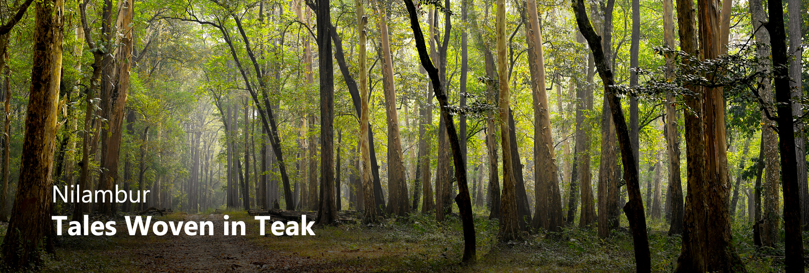

Edakkal Caves contain ancient petroglyphs
Wayanad is a rural district in Kerala state, southwest India.

Nilgiris range of the Western Ghats
The teaks for the construction of Uru, a kind of ships those were used for maritime trade through Beypore port.

There are about 456 types of Theyyam.
Theyyam is a popular ritual form of dance worship in Kerala